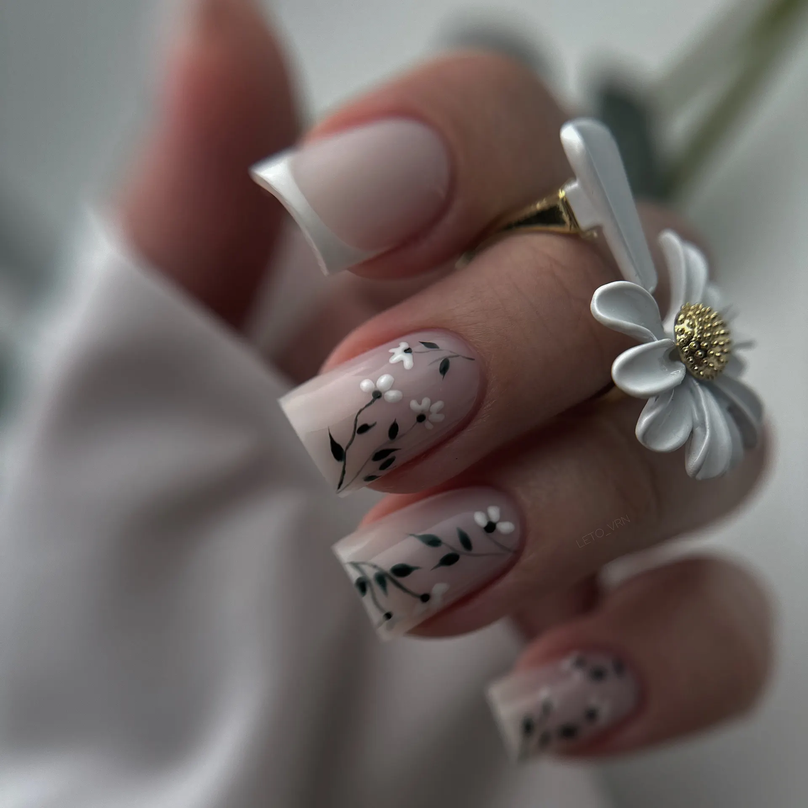
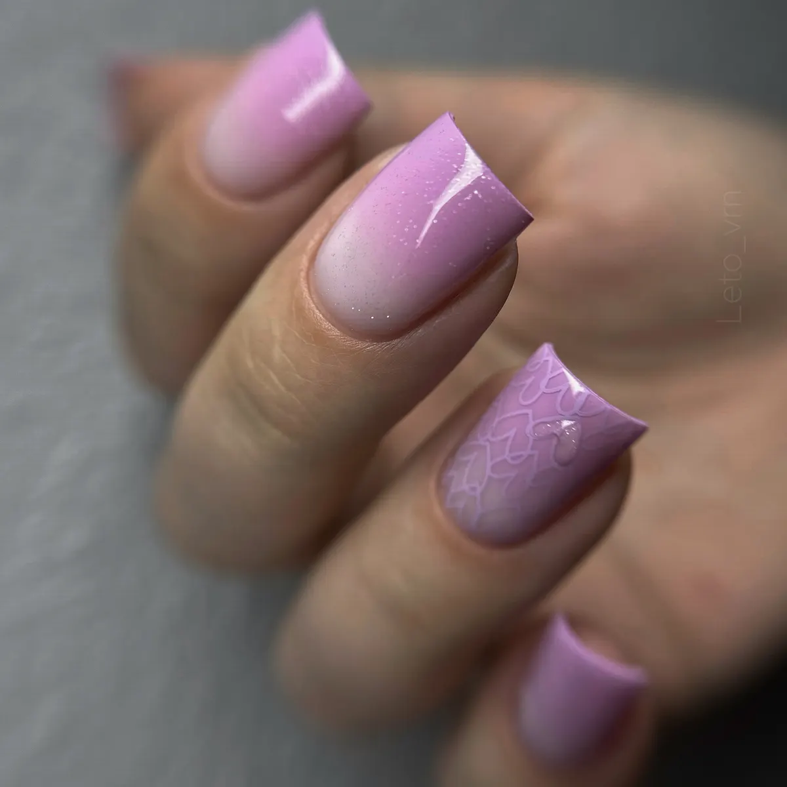
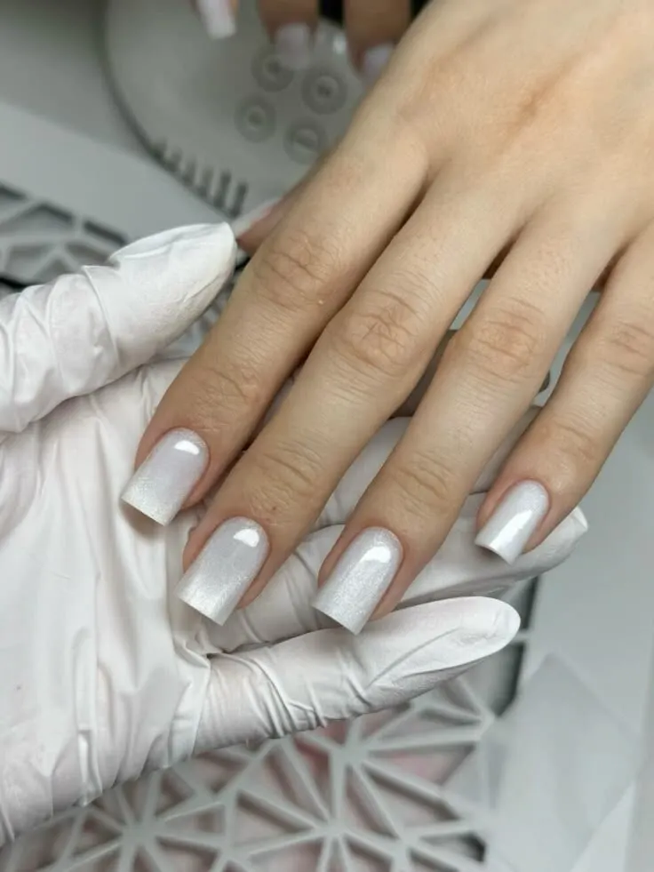
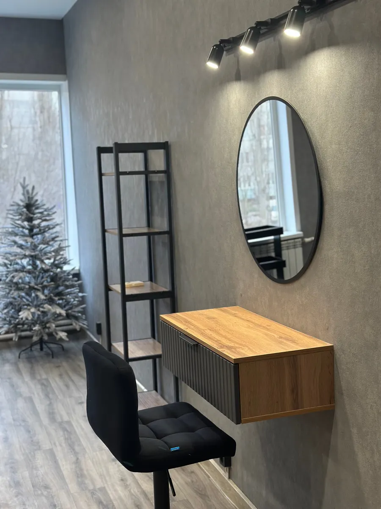

Салон красоты · Воронеж
Маникюр и педикюр в Воронеже – к мастерам, к которым ездят через город
Генерала Лизюкова, 50, офис 301. Ежедневно 10:00–20:00. Клиенты ходят сюда 7 и 11 лет – читайте отзывы ниже.
- Рейтинг 5,0 · 60 отзывов на Яндекс.Картах
- Ежедневно 10:00–20:00, без выходных
- Атмосфера и маникюр – 100 % положительных оценок

Почему ходят годами
Входит
- «Хожу к девочкам более 11 лет – не расстаюсь»
- «Все выполняется на высшем уровне, качественно и стерильно»
- «Студия уютная, всегда чистая»
- Мастера Наталия и Елена
Отдельно, если нужно
- Выбор мастера – при записи
- Полный прайс – в мессенджере
Услуги
Прайса в карточке нет – полный лист с ценами владелица диктует за минуту, подставим на сайт.
Салон
- Маникюруточнить
- Педикюруточнить
- Бровиуточнить
Цены появятся здесь после звонка владелицы – так заявка на запись всё равно приходит с готовым сообщением.
Цены для примера. В вашем сайте будут ваши.
Как проходит запись
- 01
Выбрали услугу, день и время
Кнопкой на сайте – за минуту, без звонков.
- 02
Заявка ушла в WhatsApp или Telegram
Текст уже набран – осталось отправить.
- 03
Пришли к своему времени
Генерала Лизюкова, 50, офис 301, этаж 3.
- 04
Выходите с готовым результатом
«Всегда сделает красиво» – отзывы на Картах.



Что говорят клиенты
«Хожу более 11 лет и не расстаюсь»
Клиентка переехала на другой конец города – и всё равно приезжает каждый месяц.
«Качественно и стерильно»
Семь лет маникюра и педикюра у мастера Наталии.
«Студия уютная, всегда чистая»
Атмосфера – 100 % положительных оценок на Картах.
Отзывы с Яндекс.Карт
«Хожу к девочкам более 11 лет. Наталия и Елена с самого детства со мной. Переехала на другой конец города, но с ними не расстаюсь, каждый месяц я у них. Студия уютная, всегда чистая!»
лика ром · 22 июля
«Хожу уже 7 лет на маникюр, педикюр к мастеру Наталия. Все выполняется на высшем уровне, качественно и стерильно.»
Елена Степанова · 1 июля
«Лето – мой любимый салон! Пришла впервые 7 лет назад и больше не искала другого. Всегда обработанные индивидуальные инструменты!»
Алина Балашова · 29 июля 2025
Отзывы с карточки на Яндекс.Картах, без правок.
Частые вопросы
Где вы находитесь?
Воронеж, улица Генерала Лизюкова, 50, офис 301, этаж 3. Ежедневно 10:00–20:00.
Сколько стоят услуги?
Прайс появится на сайте после звонка владелицы – в карточке его пока нет. Напишите в мессенджер, назовут сразу.
Как записаться?
Кнопкой на сайте: выберите услугу, день и время – сообщение уйдёт в WhatsApp или Telegram салона.
Запишитесь к своему времени
- Адрес
- улица Генерала Лизюкова, 50, офис 301, этаж 3, Воронеж
- Часы
- Ежедневно 10:00–20:00
- Телефон
- +7 (933) 316-28-85